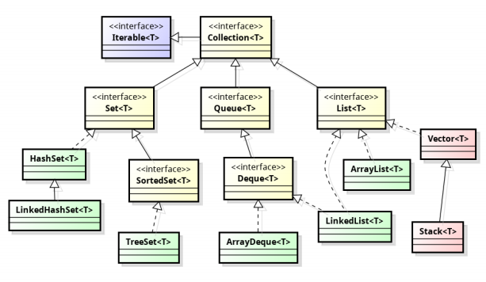
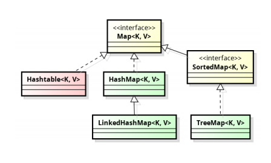

Коллекциями/контейнерами в Java принято называть классы, основная цель которых – хранить набор других элементов.
Назовите преимущества использования коллекций.
Массивы обладают значительными недостатками. Одним из них является конечный размер массива, как следствие, необходимость следить за размером массива. Другим — индексная адресация, что не всегда удобно, т.к. ограничивает возможности добавления и удаления объектов. Чтобы избавиться от этих недостатков уже несколько десятилетий программисты используют рекурсивные типы данных, такие как списки и деревья. Стандартный набор коллекций Java служит для избавления программиста от необходимости самостоятельно реализовывать эти типы данных и снабжает его дополнительными возможностями. Улучшается производительность, благодаря использованию высокоэффективных алгоритмов и структур данных
Коллекции являются универсальным способом хранения и передачи данных, что упрощает взаимодействие разных частей кода
Простота в изучении, потому что необходимо выучить только самые верхние интерфейсы и поддерживаемые операции
Какие данные могут хранить коллекции?
Коллекции могут хранить любые ссылочные типы данных.
Какие есть типы коллекций? Как они характеризуются?


List‹T› — это упорядоченный список. Объекты хранятся в порядке их добавления в список. Доступ к элементам списка осуществляется по индексу.
Интерфейс List‹T› является одним из наиболее часто используемых интерфейсов коллекций, который обозначает упорядоченную коллекцию. Каждый элемент списка имеет целочисленный индекс; возможно добавление и удаление элементов по индексу. Дополнительно этот интерфейс предоставляет специальный итератор ListIterator‹T›, который позволяет перемещаться по списку в обе стороны и вставлять новые элементы.
Данный интерфейс предоставляет следующие методы: get(), indexOf(), lastIndexOf(), listIterator(), set(), subList().
Абстрактный класс AbstractList наследуется от AbstractCollection и реализует большинство методов List интерфейса.
Абстрактный класс AbstractSequentialList наследуется от AbstractList и реализует большинство методов List интерфейса с упором на последовательный, чем на случайный доступ к элементам.
Set‹T› — множество неповторяющихся объектов. В коллекции этого типа разрешено наличие только одной ссылки типа null.
Интерфейс Set‹T› предоставляет абстракцию математического множества, т.е. неупорядоченную коллекцию, не содержащую одинаковых элементов. Из-за неупорядоченности элементы множества нельзя получить по их индексу, поэтому для множеств не имеет смысла сортировка и перемешивание элементов. Однако при этом операции проверки на наличие элемента во множестве эффективнее, чем в списке.
Данный интерфейс предоставляет следующие методы: isEmpty().
Абстрактный класс AbstractSet наследуется от AbstractCollection и реализует большинство методов Set интерфейса.
Интерфейс SortedSet‹T› является расширением Set‹T›. Он предполагает наличие отношения порядка на своих элементах. Из-за этого SortedSet предоставляет дополнительные операции.
Данный интерфейс предоставляет следующие методы: clone(), comparator(), first(), headSet(), last(), subSet(), tailSet().
Queue‹T› — коллекция, предназначенная для хранения элементов в порядке, нужном для их обработки. В дополнение к базовым операциям интерфейса Collection, очередь предоставляет дополнительные операции вставки, получения и контроля.
Очереди обычно, но не обязательно, упорядочивают элементы в FIFO (first-in-first-out, «первым вошел — первым вышел») порядке.
Абстрактный класс AbstractQueue наследуется от AbstractCollection и реализует большинство методов Queue интерфейса.
Данный интерфейс предоставляет следующие методы: offer(), peek(), poll().
Интерфейс Deque‹T› обозначает дек, структуру данных, являющуюся одновременно стеком и очередью. В дек можно добавлять и удалять элементы с двух сторон.
Метод offer() вставляет элемент в очередь, если это не удалось — возвращает false. Этот метод отличается от метода add() интерфейса Collection тем, что метод add() может неудачно добавить элемент только с использованием unchecked исключения.
Методы remove() и poll() удаляют верхушку очереди и возвращают ее. Какой элемент будет удален (первый или последний) зависит от реализации очереди. Методы remove() и poll() отличаются лишь поведением, когда очередь пустая: метод remove() генерирует исключение, а метод poll() возвращает null.
Методы element() и peek() возвращают (но не удаляют) верхушку очереди.
Map‹K, V› - используется для отображения каждого элемента из одного множества объектов (ключей) на другое (значений). При этом, каждому элементу из множества ключей ставится в соответствие одно значение из множества значений. В то же время одному элементу из множества значений может соответствовать 1, 2 и более элементов из множества ключей. Интерфейс java.util.Map‹K, V› описывает функциональность ассоциативных массивов.
Абстрактный класс AbstractMap реализует большинство методов Map интерфейса.
Данный интерфейс предоставляет следующие методы: clear(), containsKey(), containsValue(), entrySet(), equals(), get(), hashCode(), isEmpty(), keySet(), put(), putAll(), remove(), size(), values().
Интерфейс SortedMap‹K, V› обозначает словарь, в котором на ключах задано отношение порядка. Аналогично SortedSet‹T›, SortedMap‹K, V› предоставляет дополнительные операции. Предполагается, что эти операции словарь способен выполнять эффективно.
Данный интерфейс предоставляет следующие методы: comparator(), firstKey(), headMap(), lastKey(), subMap(), tailMap().
Назовите основные реализации List, Set,Queue, Map.
Интерфейс
Класс/Реализация
Описание
List
ArrayList
Список
LinkedList
Список
Vector
Вектор (устарел)
Stack
Стек (устарел)
Set
HashSet
Множество
LinkedHashSet
Множество
TreeSet
Отсортированное множество
Queue
ArrayDeque
Очередь
Map
HashMap
Карта/Словарь
LinkedHashMap
Карта/Словарь
TreeMap
Отсортированный словарь
Hashtable
Хеш-таблица (устарела)
Реализация ArrayList‹T› используется чаще всего в интерфейсе List. По сути является реализацией списка на основе массива. Кроме того, ArrayList очень эффективно использует память, и операции, основанные на доступе по индексу (сортировка, перемешивание, бинарный поиск и т.д.), выполняются быстро.
Данная реализация предоставляет следующие методы: ensureCapacity(), removeRange(), trimToSize(), clone().
Реализация LinkedList‹T› используется гораздо реже. Является реализацией списка на основе двусвязного списка. LinkedList эффективнее при вставке/удалении элементов в начале или конце и при вставке/удалении в середине после итерации до нужного места. Также LinkedList потребляет значительно больше памяти, чем ArrayList.
Реализация HashSet‹T› — это наиболее часто используемая реализация множества, потому что основные задачи множества она выполняет наиболее эффективно. HashSet основан на HashMap. Поэтому, в частности, для использования HashSet необходима правильная реализация методов equals() и hashCode().
Данная реализация наследуется от AbstractSet.
Данная реализация предоставляет следующие методы: clone().
Реализация LinkedHashSet‹T› объединяет множество на основе хеш-таблицы и связный список. Эффективность всех операций на нём та же, что и у HashSet, но порядок итерации по нему не псевдослучаен, а соответствует порядку добавления элементов в это множество. LinkedHashSet основан на LinkedHashMap и наследует HashSet, поэтому для него также справедливы условия на методы equals() и hashCode() у элементов.
Данная реализация наследуется от HashSet.
Реализация TreeSet‹T› — это множество, основанное на TreeMap. Оно реализует интерфейс SortedSet‹T›, и в нём могут храниться только элементы, на которых задано отношение порядка. Класс TreeSet основан на TreeMap, и поэтому все операции над элементами имеют логарифмическую сложность. Это хуже, чем у HashSet, поэтому TreeSet используется только тогда, когда необходимо так или иначе сортировать элементы множества.
Реализация ArrayDeque‹T› с помощью массива - наиболее удобная и эффективная.
Данная реализация наследуется от AbstractCollection и реализует интерфейс Deque.
Данный интерфейс предоставляет следующие методы: isEmpty(), clone(), toArray().
Реализация HashMap‹K, V› - словарь на основе хеш-таблицы. Из-за этого все операции над HashMap очень эффективны. HashMap реализован как хеш-таблица на основе цепочек. Внутри он содержит массив «корзин», каждая из которых является односвязным списком. Поэтому элементы словаря должны корректно реализовывать методы equals() и hashCode(). Для идеальной хеш-функции эффективность операций константная.
Данная реализация наследуется от AbstractMap и реализует Map интерфейс.
Данная реализация предоставляет следующие методы: clone().
Реализация LinkedHashMap‹K, V› объединяет хеш-таблицу и связный список. Используется, когда необходимо сохранять порядок добавления элементов в словарь. Помимо структуры хеш-таблицы, LinkedHashMap добавляет новые записи в связный список. С помощью этого можно восстановить порядок добавления элементов. Эффективность операций у LinkedHashMap та же, что и у обычного HashMap, но из-за дополнительной структуры на элементах потребление памяти выше.
Данная реализация наследуется от HashMap и реализует Map интерфейс.
Данная реализация предоставляет следующие методы: removeEldestEntry().
Реализация TreeMap‹K, V› — это реализация словаря на основе красно-чёрного бинарного дерева поиска (дерево образуют ключи). Эта структура требует отношения порядка на элементах, поэтому TreeMap реализует интерфейс SortedMap. Поскольку внутри TreeMap используется бинарное дерево, то все операции имеют логарифмическую эффективность.
Данная реализация наследуется от AbstractMap и реализует SortedMap интерфейс.
Данная реализация предоставляет следующие методы: clone().
В чём отличие ArrayList от LinkedList?
ArrayList реализован внутри в виде обычного массива. Поэтому при вставке элемента в середину, приходится сначала сдвигать на один все элементы после него, а уже затем в освободившееся место вставлять новый элемент. Зато в нем быстро реализованы взятие и изменение элемента – операции get, set, так как в них мы просто обращаемся к соответствующему элементу массива.
LinkedList реализован внутри по-другому. Он реализован в виде связного списка: набора отдельных элементов, каждый из которых хранит ссылку на следующий и предыдущий элементы. Чтобы вставить элемент в середину такого списка, достаточно поменять ссылки его будущих соседей. А вот чтобы получить элемент с номером 130, нужно пройтись последовательно по всем объектам от 0 до 130. Другими словами операции set и get тут реализованы очень медленно.
В чём отличие HashSet от TreeSet?
HashSet гораздо быстрее чем TreeSet (константное время против логарифмического для большинства операций, таких как add, remove, contains), но TreeSet гарантирует упорядоченность объектов. Оба не синхронизированы.
HashSet
предоставляет константное время для add(), remove(), contains() и size()
порядок элементов в контейнере может меняться
производительность итерации по контейнеру зависит от емкости и «коэффициента загрузки» (рекомендуется оставлять load factor значением по умолчанию равным 0.75, что является хорошим компромиссом между временем доступа и объемом хранимых данных)
TreeSet
время для базовых операций add(), remove(), contains() — log(n)
гарантирует порядок элементов
не предоставляет каких-либо параметров для настройки производительности
предоставляет дополнительные методы для упорядоченного списка: first(), last(), headSet(), tailSet() и т.д.
В чём отличие Set от Map?
Map — коллекция пар ключ/значение, тогда как Set это коллекция уникальных элементов.
Как задается порядок следования объектов в коллекции, как отсортировать коллекцию?
Класс ТгееМар полностью реализует интерфейс SortedMap. Он реализован как бинарное дерево поиска, значит его элементы хранятся в упорядоченном виде. Это значительно ускоряет поиск нужного элемента. Порядок задается либо естественным следованием элементов, либо объектом, реализующим интерфейс сравнения Comparator.
В этом классе четыре конструктора:
TreeМар() — создает пустой объект с естественным порядком элементов
TreeМар(Comparator с) — создает пустой объект, в котором порядок задается объектом сравнения с
TreeМар(Map f) — создает объект, содержащий все элементы отображения f, с естественным порядком его элементов
TreeМар(SortedMap sf) — создает объект, содержащий все элементы отображения sf, в том же порядке
Интерфейс Comparator описывает два метода сравнения:
int compare(Object obj1, object obj2) — возвращает отрицательное число, если obj1 в каком-то смысле меньше obj2; нуль, если они считаются равными; положительное число, если obj1 больше obj2.
boolean equals(Object obj) — сравнивает данный объект с объектом obj, возвращая true, если объекты совпадают в каком-либо смысле, заданном этим методом.
Чем отличается Comparable от Comparator?
В Java все коллекции, поддерживающие автоматическую сортировку, используют методы сравнения для того чтобы правильно рассортировать элементы. В качестве примера таких классов мы можем указать TreeSet, TreeMap и т.д.
Для того чтобы рассортировать элементы, класс должен реализовать интерфейсы Comparator или Comparable. Именно поэтому классы-обертки как Integer, Double и String реализуют интерфейс Comparable.
Интерфейс Comparable помогает сохранять естественную сортировку, тогда как Comparator позволяет сортировать элементы по разным особым шаблонам. Экземпляр компаратора обычно передается конструктору коллекции, если коллекция это поддерживает. Следует отметить, что интерфейс Comparable может быть реализован именно элементами коллекции или ключами Map, а Comparator реализуется отдельным объектом (это удобно, так как можно заготовить несколько реализаций для разных правил сортировок, не меняя при этом код элементов коллекции/ключей Map).
Что такое сортировка по принципу Natural Order?
Сортировка по методу compareTo, реализованного в классах, реализующих интерфейс Comparable